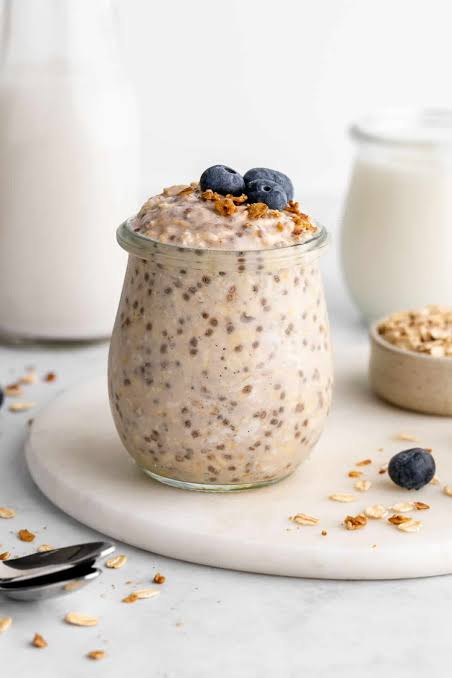

- Step One: In a large bowl or container, thoroughly mix together all ingredients until combined
- Step Two: Cover bowl/container and regrigerate for at least 4 hours, ideally overnight, until the mixture has thickened.
- Step Three: Divide between two jars or small bowls, and optionally serve topped with any of the following: Granola, seeds, cacao nibs, toasted coconut, or extra blueberries
- Step Four: Enjoy!